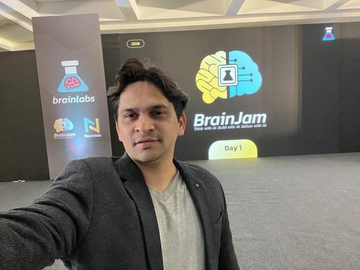
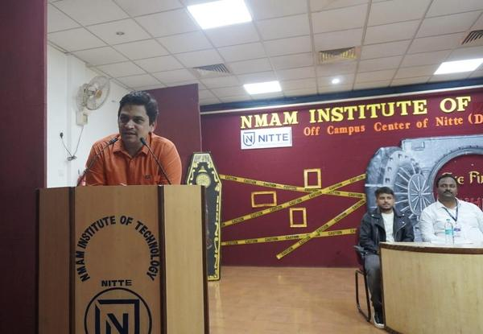
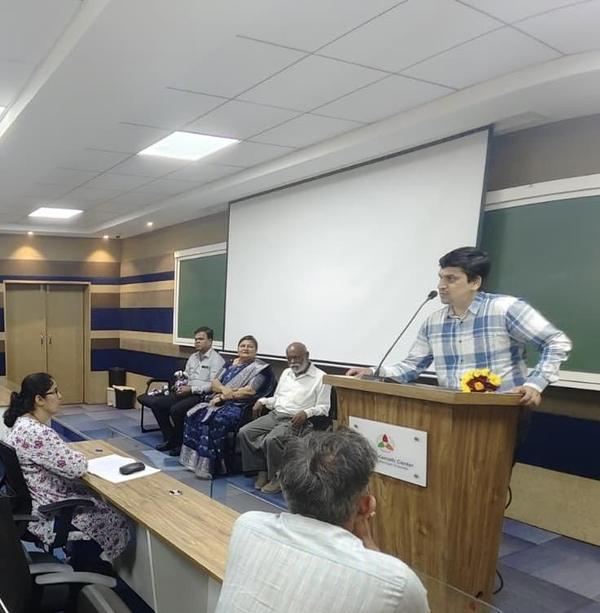
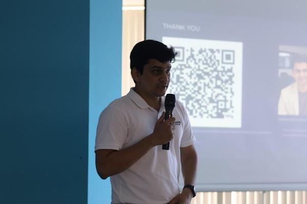
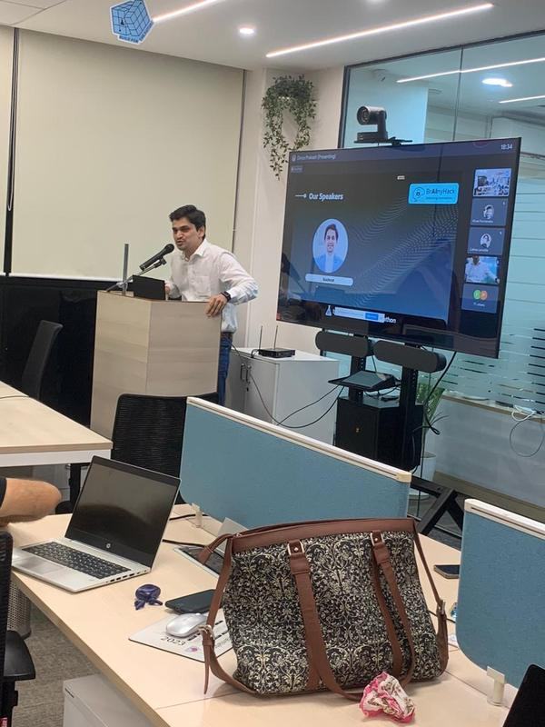
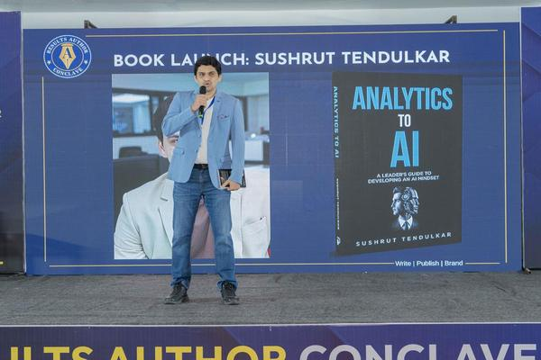
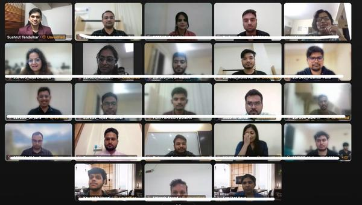
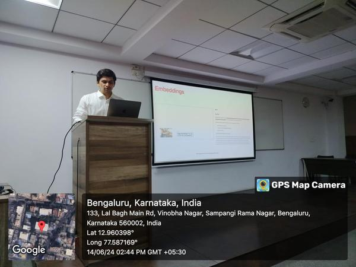
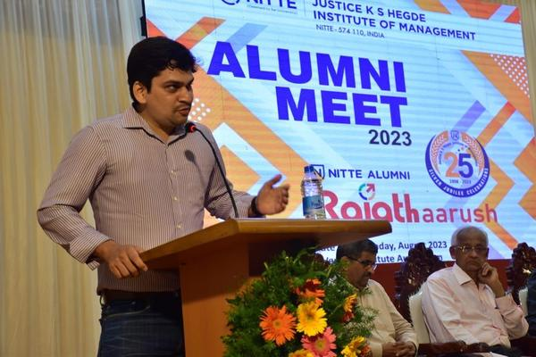

BrainJam — AI app hackathon
We organized an internal AI hackathon focused on building real apps—teams moved from idea to prototype in a compressed sprint.
(sushtend)
I’m an AI builder and mentor, turning ideas into working products 🧠⚙️🚀
A quantitative tour of token scale, GPUs and power, hyperscale data centers, and stress-tested 2040 demand — why infrastructure and unit economics sit alongside model capability in strategy.
Sushrut Tendulkar is an AI builder, and mentor
who turns ideas into working AI products. He operates at the intersection of AI,
business, and execution, building practical systems that reduce effort,
improve decisions, and deliver real outcomes. He has experience working on apps that have scaled to millions of users.
He is the author of Analytics to AI: A Leader’s Guide to Developing an AI Mindset.
His core belief is simple. AI should not remain theory. It should be applied to create clear, measurable value. His approach.
Build fast, think deep, and focus on what actually matters.
Photos from past talks, keynotes, and teaching.

We organized an internal AI hackathon focused on building real apps—teams moved from idea to prototype in a compressed sprint.

Chief guest at the Information Science and Engineering branch’s graduating-batch farewell—the formal send-off for outgoing ISE students at NMAM Institute of Technology, Nitte.

One-day faculty development program for teaching staff at Justice K.S. Hegde Institute of Management (JKSHIM), Nitte—focused on AI in education and classroom practice.

Tech talk at a Bangalore meetup on artificial intelligence and what’s changing right now.

Served on the jury for an AI hackathon—reviewing builds and demos, scoring ideas and execution, and giving teams concrete feedback in a hybrid room (in-person plus remote participants on the big screen).

2024 launch event on stage—talking about the book and why leaders need a grounded AI mindset, not just buzzwords.

Virtual session with a full grid of participants—interactive discussion on AI and analytics with TAPMI students and guests.

Bengaluru—technical talk on recommendation systems: how modern RecSys are built, where they matter in real products, and the ideas that make them work—for engineers and data scientists.

One of the invited guests at the Nitte alumni gathering—spoke from the podium on careers in tech, lessons from industry, and staying connected with the Nitte community after campus.
Long-form on this site, plus pieces on Medium, Simplilearn, and elsewhere. (I’ll add more here over time.)
Free SkillUp course I contributed to—click the banner to open the full program on Simplilearn.
Measuring the Relationship Between User Engagement and Conversion Propensity Lal Bahadur Shastri Institute of Management, New Delhi · Jan 2020
This work examines how engagement signals relate to conversion propensity, with a practical measurement framework for linking user behavior metrics to downstream conversion outcomes.
Using Text Mining and Sentiment Analysis to study Correlation between Page Engagement and Articles Indian Institute of Management Bangalore · Dec 13, 2017
This paper studies the relation between sentiment of an article published and its page engagement metrics. It uses simple neural networks, word embeddings, and classification techniques to estimate sentiment for each article.
Completed the Executive Education Program Generative AI and Agentic AI with Business Applications at IIM Bangalore—covering enterprise GenAI use cases, agentic AI design, and applications across business functions.
Since October 2025 I’ve been at Brainlabs in data science—working across marketing measurement, media mix modeling, recommendation systems, and lead-scoring workflows. We also build AI products, custom GenAI solutions, and Agentic AI workflows to automate execution, and regularly pitch and demo new tools and services to teams and stakeholders.
Published my first book, Analytics to AI: A Leader’s Guide to Developing an AI Mindset—a practical guide for leaders to help develop an AI mindset.
I spent about four years at VerSe Innovation, based in Bengaluru. For most of that time I worked on machine learning for Josh, the short-video product—recommendation, ranking, and the usual loop of training, evaluating, and shipping improvements. In my last stretch there I worked on ML for the NexVerse AI ad exchange side of the stack, through October 2025.
I joined Stanford Online’s Artificial Intelligence Professional Program - xcs229 Machine Learning with Andrew Ng—a math-heavy foundations course in ML—and completed that work. It solidified my understanding and gave me depth, alongside pushing further into applied ML in industry.
I spent a little over three years at Nabler in Bengaluru as a data science consultant—building models, analyses, and tooling for clients, and helping teams go from messy data to something they could actually use in production and planning.
I started my data career at TIME, where I stayed for a little over four years. The work was predcitive analytics—audience and editorial data, experiments, and ad hoc studies—whatever helped the newsroom and the business understand what was working. It’s where I first dug into AI: I wrote my first neural network and presented a paper on a sentiment analysis project.
Success is all about repetition. Will Durant (summarizing Aristotle): “We are what we repeatedly do.” Excellence is habit-shaped, not a single heroic act—so design routines and systems you can sustain, not one-off sprints that collapse.
“Focus. Fail fast. Adapt. Win.” A four-beat operating mantra: narrow the bet, test cheaply, update the plan without ego when reality disagrees, then compound what works—useful when teams confuse busywork with learning velocity.
Satya Nadella framed this when turning Microsoft toward humility and growth: if the goal is to look smartest, people hide gaps and repeat old playbooks; if the goal is to learn, people ask questions, admit mistakes, and update faster. Same idea applies to any team where ego blocks honest feedback and experimentation.
Procrastination points at the uncomfortable, high-leverage task—hard conversations, deep focus, shipping before it feels perfect. Notice the avoidance and treat it as a signal, not a moral failing.
Jeff Bezos used “Day 1” in Amazon’s letters for the mindset of a hungry startup—obsessed with customers, wary of bureaucracy and vanity metrics, willing to decide quickly. Day 2 is drift: you optimize for safety, slow down, and competitors eat your lunch. The line is a warning not to confuse scale with being finished.
Steve Jobs (Stanford, 2005)—so you have to trust that the dots will somehow connect in your future. The practical upshot: follow real interest and skill-building even when the “why” isn’t clear yet; meaning often arrives after the fact.
“Stop wishing for an easier path. Start working on becoming stronger.” Same family of idea as Jim Rohn-style stoicism: the variable you control isn’t how gentle the road is—it’s your capacity to walk it. Train there, and the same obstacles shrink relative to you.
“Not the best person, but the best-known person in the industry will succeed.” Harsh, but it names how many markets actually allocate opportunity: visibility, referrals, and trust need a signal. Pair real craft with consistent “showing your work” so merit isn’t locked in a vault nobody opens.